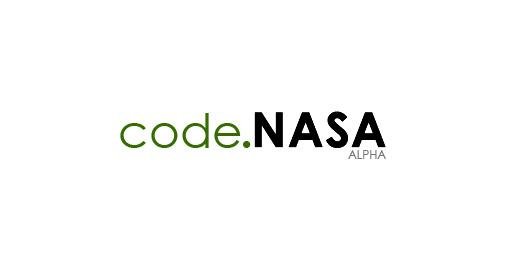

也紀念我們永遠的朋友 李士傑先生（Shih-Chieh Ilya Li）。
NASA 推出 code.nasa.gov 與開放源碼社群進一步分享與合作
本文由 OpenSource.com 翻譯，採創用CC姓名標示-相同方式分享 3.0 Unported (CC-BY-SA 3.0)

繼釋出公開政府計畫 (Open Government Plan) 與去年的開放源碼高峰會 (Open Source Summit) 之後，美國國家航空暨太空總署 (NASA) 如今接著推出 code.nasa.gov 網站，要持續、統整並擴充 NASA 的開放源碼行動。
該網站仍為初期測試 (early alpha) 階段，但已可用來瀏覽 NASA 的開放源碼專案，更了解該機構對開放源碼的貢獻，並且開始著手貢獻一己之力。雖然上面列有一長串的專案，但其中僅有 4 個專案有專案頁面，而且全是 Github 的頁面：
-
OpenMDAO，是以 Python 撰寫的跨學科 (Multidisciplinary) 設計分析與最佳化框架。
-
World Wind，是運用 NASA Learning Technologies 專案建構的 3D 互動式世界瀏覽程式。
-
Vision Workbench，則為一套影像處理與電腦視覺程式庫。
-
Research Center StereoPipeline，是一套自動化工具，用以處理探險機器人在其他星球上所抓取的圖片。
正如 Rikki Endsley 在 NetworkWorld 上所指出，在等待 code.nasa.gov 功能更加完善之前，open.nasa.gov 網站上還有許多可供探索的地方。這是一個以擴大社群參與為目的的網站，即使你並非開發人員，還是可以參與其中。NASA 以其 1958 年的章程為基礎，一直致力於開放公民更廣泛地參與其中。該章程引導 NASA，提供最廣泛適當的資訊傳播方式。
來自 Ames 研究中心開放政府辦公室 (Open Government office) 的 William Eshagh，在一篇有關 code.nasa.gov 推出的部落格文章中，談到之後的計畫。
第二階段將著重於為在該機構持續進行開放源碼概念、政策、專案的討論，提供堅實的論壇。在我們的第三階段中，我們將轉往一般開發專案成功所需的工具與機制，例如分散式版本控制、問題追蹤 (issue tracking)、持續整合 (continuous integration)、文件、通訊、規劃與管理。在這一階段中，我們將創建並管理工具、服務、流程鏈，以進一步降低邁向開放的障礙。
在該文章的最後一節中，他談及了開放成功的真正核心，以及對 NASA 而言的潛力所在：我們相信未來的太空與科學系統，將以開放作為基礎，code.nasa.gov 在此一過程中將扮演重要角色。你的程式碼有一天會不會離開我們的太陽系，或者降落在某個陌生的星球上？我們將致力使這一切成真。因為有你的努力，此一目標終將成真。
如果有任何想法，可以寄到 This e-mail address is being protected from spambots. You need JavaScript enabled to view it
相關網址
- NASA 擴展開放源碼活動
https://www.networkworld.com/community/node/79491 - NASA 推出開放源碼網站
https://www.h-online.com/open/news/item/NASA-launches-open-source-web-site-1404210.html - 幫助 NASA 寫出翱翔星際的程式碼
https://www.webmonkey.com/2012/01/help-nasa-code-its-way-through-space/ - NASA 發現開放源碼星球
https://www.muktware.com/news/3175/nasa-discovers-open-source-planet - 如何在閒暇之餘為 NASA 工作
https://www.theatlantic.com/technology/archive/2012/01/how-to-work-for-nasa-in-your-free-time/250936/
OSSF Newsletter : 第 189 期 保護雲端隱私的技術：Homomorphic Encryption 與 Unhosted
Tags: NASA, 公開政府計畫, 開放政府辦公室, open government, OpenMDAO, World-Wind-Java, Research Center StereoPipeline, Vision Workbench, Github,
Category: FOSS News
Special


Address：No.128, Sec.2, Academia Rd., Institute of Information Science, Academia Sinica, Nangang District, Taipei City 11529, Taiwan (R.O.C).
Privacy Policy. Terms-of-use